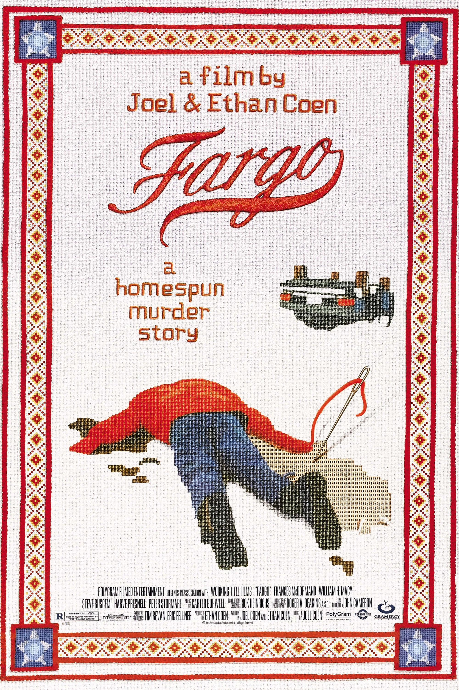

Fargo
Published: March 1996
The Coen Brothers' "Fargo" is a crime film built out of bad decisions, frozen roads, awkward silences, and one of cinema's calmest moral centers. It begins with a desperate plan that sounds almost manageable to the people inside it: a car salesman arranges a kidnapping to solve his money problems. From there, the film keeps showing how small dishonesties can gather weight until they become something brutal.

What makes the film so sharp is its refusal to choose one clean tone. It is funny, but the humor never turns the violence into a joke. It is violent, but the violence is not glamorous or grand. Jerry Lundegaard is not a mastermind; he is nervous, evasive, and ordinary in a way that makes him more unsettling. The crime grows from pettiness and self-pity, which gives the story a strange credibility. Fargo understands that catastrophe does not always begin with ambition. Sometimes it begins with a man convincing himself that one more lie will fix the last one.
Marge Gunderson enters relatively late, but once she arrives the whole film finds its balance. Frances McDormand plays her without vanity, hardness, or sentimental softness. Marge is polite, pregnant, patient, and very good at noticing what people try to hide. The film treats those qualities as intelligence rather than decoration. Her decency is not naive; it is active, practical, and alert. She asks simple questions, looks carefully, and keeps moving through a world where other people mistake greed for necessity.
The snowbound landscape gives the film much of its feeling. Roger Deakins' images turn Minnesota into a place of white space, empty roads, dark cars, and figures swallowed by weather. That visual plainness is perfect for the story. There is nowhere for the characters to hide emotionally, even when the horizon seems endless. The cold does not make the film distant; it makes every small gesture stand out. A phone call, a meal, a look across a desk, or a car pulled over on the roadside all feel exposed.
The dialogue is just as important as the plot. The regional politeness, pauses, and repeated little courtesies create a rhythm that is both comic and tense. People talk around what they mean, soften their demands, and keep up manners even when the situation underneath has already turned rotten. The Coens are often praised for deadpan style, but here the deadpan has a moral function. It shows the gap between social surface and actual behavior.
Fargo's cruelty lands because the film keeps placing it beside everyday tenderness. Marge and Norm's home life is gentle without being idealized. Their conversations about breakfast, work, and Norm's painting do not feel like side details; they are the film's counterweight. Against Jerry's panic and the kidnappers' stupidity, those scenes suggest a different way of living: modest, attentive, and free of theatrical self-importance.
That contrast is why the final stretch feels so clear. Fargo is not only about crime or absurdity; it is about the mystery of why people throw away ordinary goodness for money, pride, or a fantasy of escape. Marge does not deliver a grand speech or solve the moral puzzle of the world. She simply recognizes that something terrible has happened for reasons that are painfully small. The film's power sits in that recognition. It looks at human foolishness without flinching, then quietly insists that decency still matters.